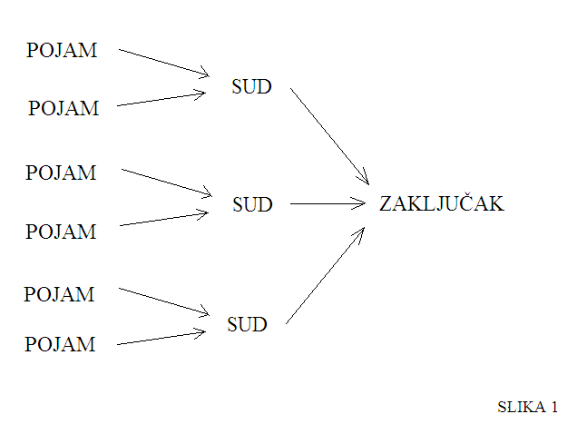

Uvod u tradicionalnu logiku
Ovdje možeš saznati ponešto o sastavnicama tradicionalne logike, a to su ponajprije pojam, zatim sud te zaključak.
Oni se međusobno nalaze u sljedećem odnosu: 
Kao što slika prikazuje, pojam bismo mogli nazvati temeljnom građevnom jedinicom svakog suda, a sud građevnom jedinicom zaključka. Kao nekakvu analogiju mogli bismo pojmove usporediti sa stanicom, koja je temeljna građevna jedinica svakog organa. Sudove bismo nadalje mogli usporediti s organima, a zaključke s organizmima.
Osim o pojmovima, sudovima i zaključcima, u ovom dijelu stranice biti će govora i o vennovim dijagramima, koji nam, među ostalim, pomažu pri tumačenju i čitanju zaključaka.
Krenimo dalje pojasniti što je to pojam.